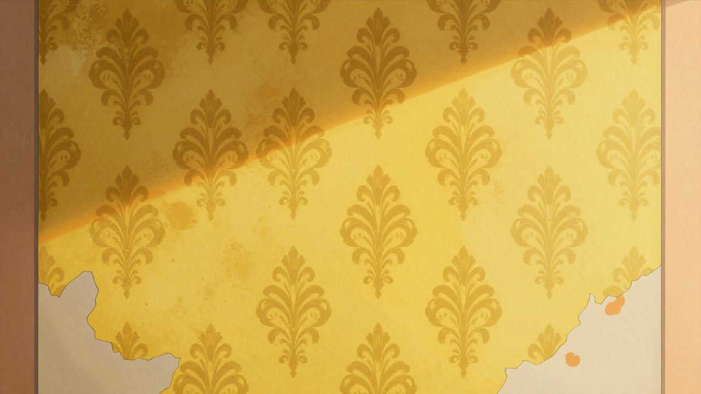
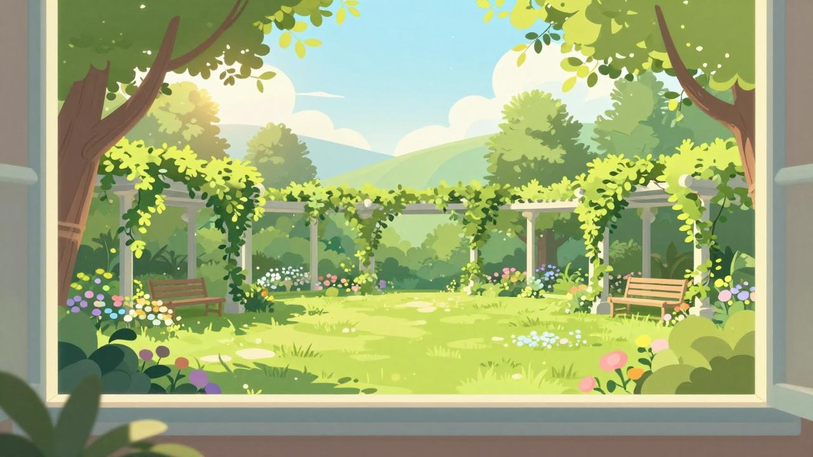
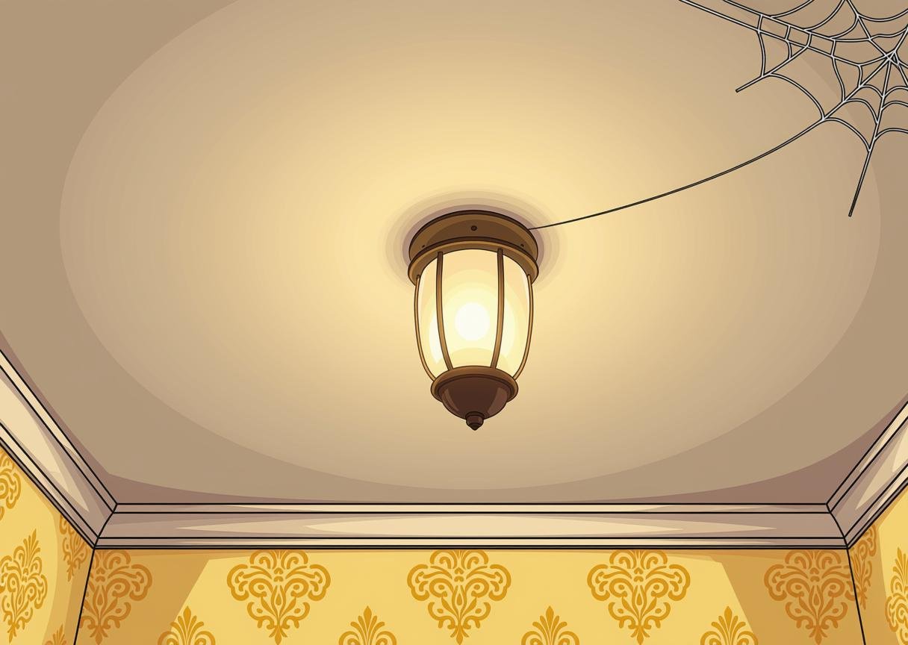
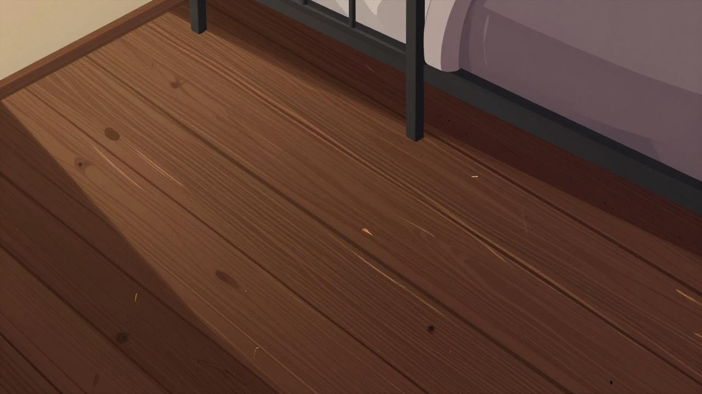
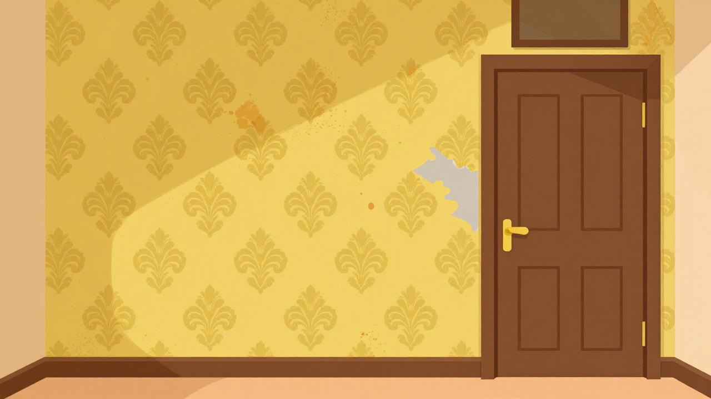
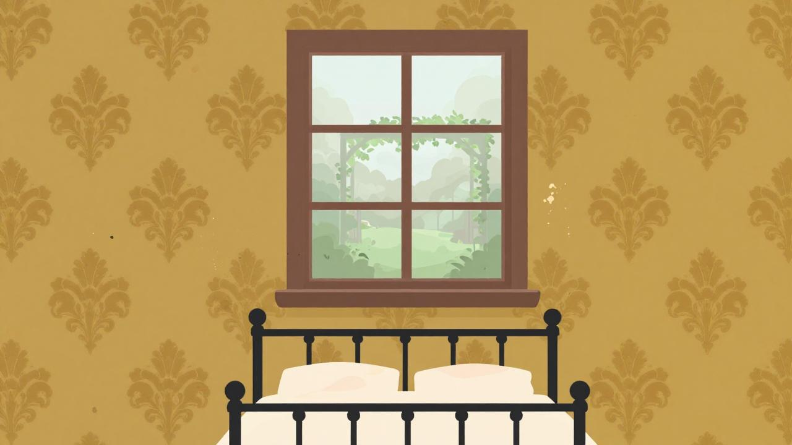

Considerando cuán común es la enfermedad, cuán tremenda es la alteración espiritual que conlleva, con cuánto asombro, entonces, cuando las luces de la salud decaen, se revelan ignotos países, qué descampados páramos y desiertos del alma un grácil ataque de influenza trae a la luz, qué precipicios y prados asperjados de brillantes flores revela un pequeño aumento de temperatura, qué tenaces y vetustos robles son desarraigados en nosotros en el acto de la enfermedad, cómo descendemos al pozo de la muerte y sentimos las aguas de la aniquilación cerrarse sobre nuestras cabezas y despertamos pensando encontrarnos en presencia de ángeles y arpistas cuando nos sacan una muela y salimos a la superficie en el sillón dental y confundimos su «Enjuáguese la boca, enjuáguese la boca» con el saludo de una deidad que se inclina desde el suelo del Cielo para darnos la bienvenida...
Novelas, se diría, podrían estar dedicadas a la influenza; poemas épicos, a la fiebre tifoidea; odas, a la neumonía; obras líricas, al dolor de muelas. Mas no. Salvo pocas excepciones –De Quincey intentó algo parecido en The Opium Eater, debe haber uno o dos volúmenes sobre la enfermedad diseminados entre las páginas de Proust–, la literatura hace todo cuanto le es posible para sostener que lo que le concierne es el pensamiento; que el cuerpo no es más que una lámina de liso cristal a través del cual el alma mira directa y claramente y, salvo una o dos pasiones, como el deseo y la codicia, es nula, insignificante e inexistente.
Mas, por el contrario, su envés es lo verdadero. Todo el día y la noche entera, el cuerpo interviene; se despunta o se afila, se colorea o decolora, se convierte en cera durante la canícula de junio, se fragua hasta convertirse en sebo en la lobreguez de febrero. La criatura interior puede mirar sólo a través del cristal, manchado o sonrosado; como la vaina de un cuchillo o de un arveja, no puede separarse del cuerpo ni un solo instante; debe pasar por toda la interminable procesión de cambios, calor y frío, confort e incomodidad, hambre y satisfacción, salud y enfermedad, hasta que adviene la inevitable catástrofe: el cuerpo se rompe en pedazos y el alma (se dice) escapa.
De todo este drama cotidiano del cuerpo, sin embargo, no hay registro alguno. La gente siempre escribe acerca las actividades del espíritu, de los pensamientos que le sobrevienen, de sus nobles propósitos, de cómo ha civilizado al universo. En el torrente del filósofo, muestran al espíritu ignorante respecto del cuerpo, o pateándolo como un viejo balón de fútbol de cuero a través de leguas de nieve y desiertos en virtud de la conquista o el descubrimiento.
Pero volvamos al enfermo. «Estoy en cama con gripe», dice, y en realidad se queja de que no recibe conmiseración. «Estoy en cama con gripe», pero qué nos dice esto de la gran experiencia; de cómo el mundo ha cambiado de forma; de cómo las herramientas de los negocios se han vuelto remotas; de cómo las eufonías de festival se han vuelto románticas como un carrusel que se ausculta a través de campos lejanos; y de cómo los amigos han cambiado, algunos adquiriendo una extraña belleza, otros deformados hasta las cuclillas de los sapos, mientras que todo el paisaje de la vida yace remoto y bello, como la costa que se vislumbra desde un barco en alta mar.
En cuanto guardar cama aparece como una exigencia o, hundidos entre las almohadas de una silla, levantamos los pies aunque sea un centímetro del suelo en otra, dejamos de ser soldados en el ejército de los rectos; nos convertimos en desertores. Ellos marchan a la batalla. Nosotros flotamos con ramas en el arroyo; nos dejamos desplomar con las hojas muertas sobre el césped, irresponsables y desinteresados y somos capaces, tal vez por primera vez en años, de mirar en derredor, de mirar hacia arriba –de mirar, por ejemplo, al cielo.
En la enfermedad, las palabras parecen poseer una cualidad mística. Captamos lo que está más allá de su significado superficial, aprehendemos instintivamente esto, aquello y lo otro —un sonido, un color, aquí un acento, allá una pausa— que el poeta, sabiendo que las palabras son exiguas en comparación con las ideas, ha diseminado por sus páginas para evocar, al reunirlas, un estado mental que palabra alguna podría expresar ni razón explicar.
Es muy raro que gente corriente como John y yo nos aseguremos salas ancestrales para el verano. Una mansión colonial, una finca hereditaria, diría que una casa encantada, y alcanzaría la cima de la felicidad romántica, pero eso sería pedirle demasiado al destino. Aun así, declararé con orgullo que hay algo extraño en ella.
John se ríe de mí, por supuesto, pero uno espera eso en el matrimonio. John es extremadamente práctico. No tiene paciencia con la fe, tiene un intenso horror a la superstición, y se burla abiertamente de cualquier conversación sobre cosas que no se pueden sentir y ver y poner en cifras. John es médico, y tal vez (no se lo diría a un alma viva, por supuesto, pero esto es papel mojado y un gran alivio para mi mente), tal vez esa sea una de las razones por las que no me pongo bien más rápido.
Verá, ¡él no cree que esté enferma! ¿Y qué se puede hacer? Si un médico de alto nivel, y el propio marido, aseguran a los amigos y parientes que lo único que le pasa a uno es una depresión nerviosa temporal, una ligera tendencia histérica, ¿qué puede hacer uno?
No me gusta nada nuestra habitación. Quería una que diera a la plaza y tuviera rosas en la ventana, y unas colgaduras de cretona tan bonitas y anticuadas, pero John no quiso ni oírlo. Es muy cuidadoso y cariñoso, y casi no me deja moverme sin indicaciones especiales.
La pintura y el papel parecen haber sido utilizados en un colegio de niños. El papel está desprendido en grandes manchas alrededor de la cabecera de mi cama, hasta donde puedo llegar, y en un gran lugar al otro lado de la habitación, en la parte baja. No he visto un papel peor en mi vida.
Uno de esos patrones extravagantes que cometen todos los pecados artísticos. Es lo suficientemente aburrido como para confundir al ojo al seguirlo, lo suficientemente pronunciado como para irritar constantemente y provocar el estudio, y cuando sigues las curvas cojas e inciertas durante una pequeña distancia, de repente se suicidan: se desploman en ángulos escandalosos, se destruyen en contradicciones inauditas.
El color es repelente, casi repugnante; un amarillo humeante y sucio, extrañamente descolorido por la luz del sol que cambia lentamente. En algunos lugares es de un naranja apagado pero escabroso, y en otros de un enfermizo tinte sulfúrico. No es de extrañar que los niños lo odien. Yo misma lo odiaría si tuviera que vivir mucho tiempo en esta habitación.
Este papel de pared tiene una especie de sub-patrón en un tono diferente, uno particularmente irritante, ya que sólo se puede ver en ciertas luces, y no claramente entonces. Pero en los lugares donde no está descolorido, y donde el sol está justo así, puedo ver una extraña, provocadora, especie de figura sin forma, que parece enfurruñarse detrás de ese tonto y conspicuo diseño frontal.
Detrás de ese patrón exterior, las tenues formas se hacen más claras cada día. Es siempre la misma forma, sólo que muy numerosa. Y es como una mujer que se agacha y se arrastra detrás de ese patrón. No me gusta nada. Me pregunto -empiezo a pensar- ¡ojalá John me llevara lejos de aquí!
A la luz de la luna -la luna brilla toda la noche cuando hay luna- no sabría que es el mismo papel. Por la noche, con cualquier tipo de luz, en el crepúsculo, a la luz de las velas, de las lámparas y, lo que es peor, a la luz de la luna, ¡se convierte en barras! El patrón exterior, quiero decir, y la mujer que está detrás es tan simple como puede ser.
Durante mucho tiempo no me di cuenta de qué era lo que aparecía detrás, ese tenue subpatrón, pero ahora estoy bastante seguro de que es una mujer. A la luz del día, está sometida, tranquila. Creo que es el patrón el que la mantiene tan quieta. Es tan desconcertante.
El patrón delantero se mueve, ¡y no es de extrañar! ¡La mujer de atrás lo agita! A veces creo que hay muchas mujeres detrás, y a veces sólo una, y ella se arrastra rápidamente, y su arrastre lo sacude todo. En los lugares muy luminosos se queda quieta, y en los lugares muy sombríos se agarra a los barrotes y los sacude con fuerza. Y todo el tiempo trata de trepar. Pero nadie podría trepar por ese patrón, que estrangula tanto.
¡Al fin he salido, a pesar de ti y de Jane! Y he arrancado la mayor parte del papel, ¡así que no puedes devolverme! ¿Por qué iba a desmayarse ese hombre? Pero lo hizo, y justo al otro lado de mi camino, junto a la pared, de modo que tuve que arrastrarme sobre él cada vez.
Tú me quieres alba,
me quieres de espumas,
me quieres de nácar.
Que sea azucena
Sobre todas, casta.
De perfume tenue.
Corola cerrada.
Ni un rayo de luna
filtrado me haya.
Ni una margarita
se diga mi hermana.
Tú me quieres nívea,
tú me quieres blanca,
tú me quieres alba.
Tú que hubiste todas
las copas a mano,
de frutos y mieles
los labios morados.
Tú que en el banquete
cubierto de pámpanos
dejaste las carnes
festejando a Baco.
Tú que en los jardines
negros del Engaño
vestido de rojo
corriste al Estrago.
Tú que el esqueleto
conservas intacto
no sé todavía
por cuáles milagros,
me pretendes blanca
(Dios te lo perdone),
me pretendes casta
(Dios te lo perdone),
¡me pretendes alba!
Huye hacia los bosques,
vete a la montaña;
límpiate la boca;
vive en las cabañas;
toca con las manos
la tierra mojada;
alimenta el cuerpo
con raíz amarga;
bebe de las rocas;
duerme sobre escarcha;
renueva tejidos
con salitre y agua:
Habla con los pájaros
y límpiate al alba.
Y cuando las carnes
te sean tornadas,
y cuando hayas puesto
en ellas el alma
que por las alcobas
se quedó enredada,
entonces, buen hombre,
preténdeme blanca,
preténdeme nívea,
preténdeme casta.